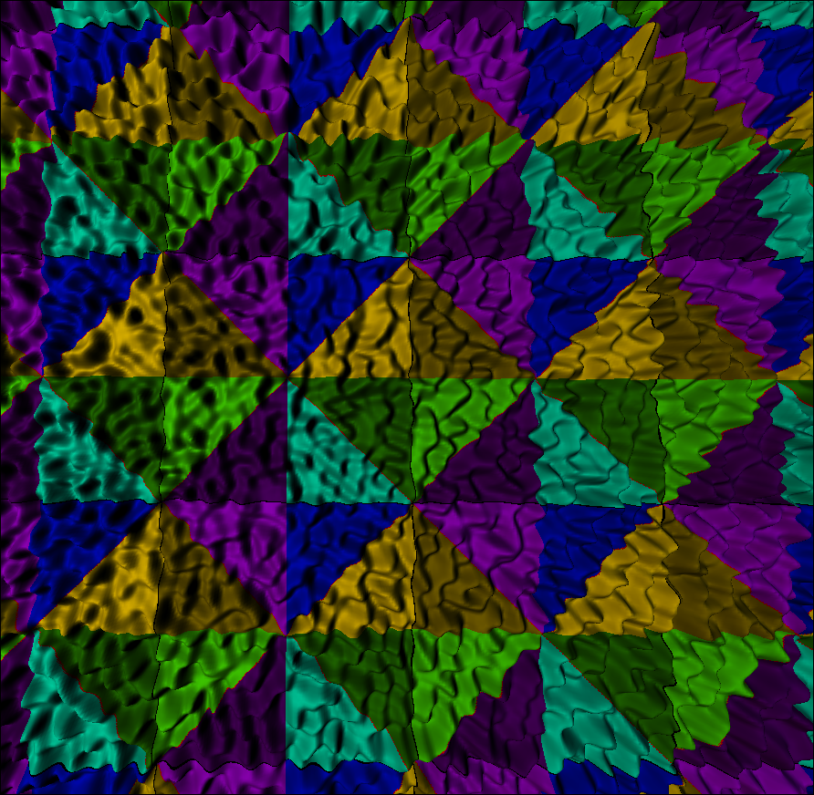
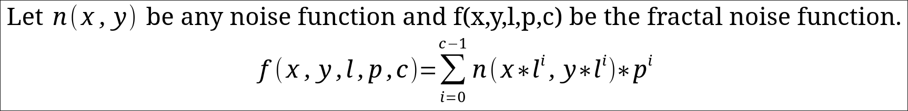
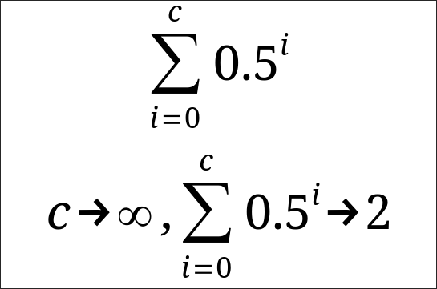

Scale:1
View:top


Scale:0.25
View:~30 degrees


If we sample a larger area of simplex noise, we start noticing an issue: it looks flat and uninteresting.

The solution is simple: Fractal Noise. Here, fractal means repeating smaller and smaller. We can define it simply:

It should be noted that the derivatives are linear, so the same can be done for them. The important parameters are count (how many octaves (levels) of noise to use), lacunarity (scale of input components for each octave), and persistance (scale of amplitude for each octave). It is standard to set l=2 and p=0.5, and c is up to preference, depending on the application (there are even cases where you want only 1!). Here is a comparison between 1, 2, 4, and 8 octaves (note that I additionally used a different seed for each octave, to prevent the center from looking exagerated):
| Parameters | 1 octave | 2 octaves | 4 octaves | 8 octaves |
|---|---|---|---|---|
| Amplitude:1 Scale:1 View:top |
|
|
|
|
| Amplitude:0.5 Scale:0.25 View:~30 degrees |
|
|
|
|
To keep the result normalized, you can divide by this sum:

In my case, I don't care about it being normalized, but if you were drawing the heightmap as an image (i.e. instead of high, useing brightness), then you would want it normalized. You can use 2 if you don't want to calculate the actual sum.